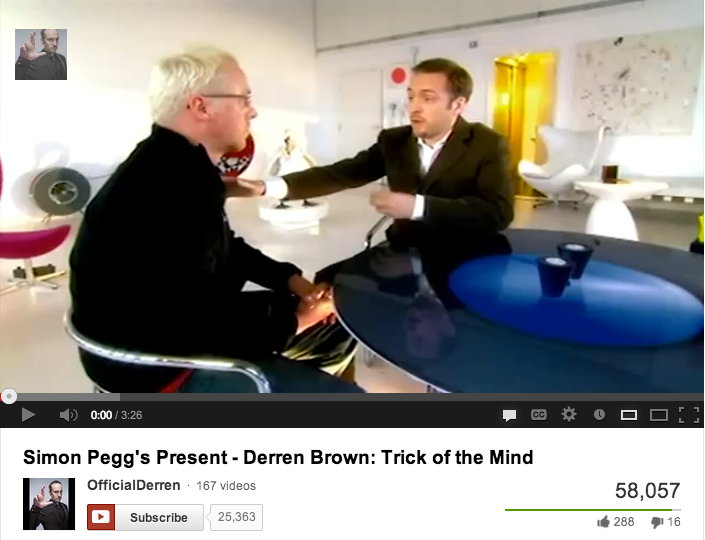
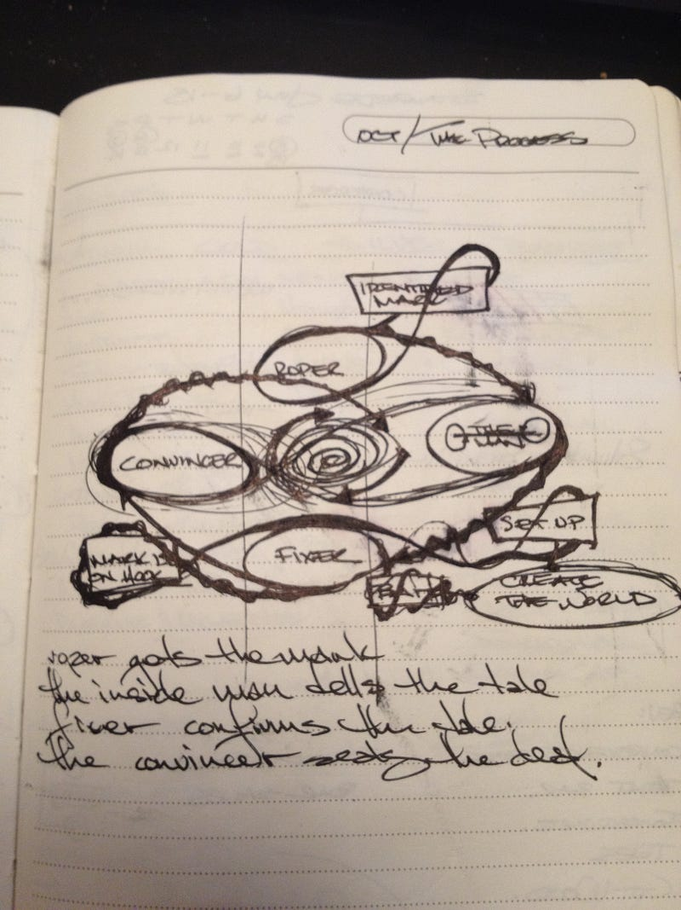

The Art of Confidence
The smoothest con man that ever lived. That’s what they say about Victor Lustig pictured above. His claim to fame is that he sold the Eiffel Tower, twice. Yup, that happened. He became fluent in multiple languages, harnessed his ocean liner and started printing money, literally.
A guide to learn your hustle.
Contrary to popular opinion, the hustle is not a new dance step — it is an old business procedure.
—Fran Lebowitz
The smoothest con man that ever lived. That’s what they say about Victor Lustig pictured above. His claim to fame is that he sold the Eiffel Tower, twice. Yup, that happened. He became fluent in multiple languages, harnessed his ocean liner and started printing money, literally. Even had the minerals and confidence to hustle Al Capone.
There are plenty of confidence men in history, well known like Frank Abagnale (Catch Me If You Can) and those that leave a legacy behind them like Charles Ponzi (good articles on the ballsiest hustles, ever 1,2,3). The stories are fantastical and sometimes quite hard to believe. You should definitely save them for later and marvel. The common denominator among all these characters is that they all gave good hustle. Regardless of their intentions, they strategized a plan with contingencies that would allow them to achieve very difficult campaigns goals. This article reflects upon my discovery and how I utilize the long con every single day in today’s busy digital realms.
I’ve always been fascinated with the Art of Grifting from a very young age. My first exposure was The Sting II with Jackie Gleason which then required me to watch The Sting with Paul Newman and Robert Redford. Was really, really young, probably seven years old, but it stuck with me. Then came Sneakers with Robert Redford again, Sidney Poitier, Dan Akroyd, Ben Kingsley and another stellar cast. Any movie where there were multiple moving layers of strategery going on to bob and weave through, I’d watch. I’d watch and rewatch to find the patterns within all of these strategies. The next phase of awakening to the ballsy approach to taking what you want was with Ocean’s Eleven. Lock, Stock and Two Smoking Barrels entered my realm with multiple plots and multiple crossovers and was then extended into Snatch. I love Snatch. Then found the gold in a movie called Fresh, a little kid who hustles everyone. So good. All of these represent a symphony or chaos in unison. Don’t even get me started on The Wire, that’s going to be it’s own series of posts. That’s some quality right there.
The Art of Manipulation was something I frowned upon until I understood it a bit better when I absorbed it in trust. In fact, once I learned the fundamentals of NLP and studied Darren Brown with his amazing ability to convince and observe, my frame of mind was completely swayed. It’s not manipulative if you’re using the trust that people have in you to direct them to something that you deeply believe in that you know has positive impact. That’s passion. That’s hustle.
In the first video below, you’ll see a harmless conversation and a gifting of a present. Then the second video will explain step by step of how it was accomplished. You will have no idea how this is done and then once you do, you’ll realize how little of our capacities we tap into.

Then came a show that I will forever be changed from, Hustle. Aired on BBC for 8 seasons and the premise of the show was a crew of grifters band together to hustle only the greedy that are just bad apples. They are the Robin Hood of grifting and live by a code, there’s always a code. The show consumed me. There were contingencies for every traversal of every avenue. Every direction had a backup plan to get the plan back on the track in case something happened. It was the greatest exercise of worst-case scenarios and covering every single one of them. For problem solvers, these shows are great because they involve us and our faculties to try and figure out how to pull off the hustle before it’s revealed. Very similar to being handed a brief and having to come up with a creative campaign or production. The hustle in that case is what is the compelling creative idea that just wows someone to the point where they’ve handed you the keys and are letting you drive. You just earned yourself some confidence and nailed it out of the park. Good hustle.
One episode it finally clicked. The simple art of suggestion (click here to watch the scene). One of their jobs required a PR agency to go in and play a role in the tale. They had to create the illusion of an agency that did not exist. The elaborate unfolding involved replacing cups at the coffee shop with ones with New London Media plastered on it while another one of the crew is talking loudly on a phone about New London Media. Another crew member is walking by with a sign for New London Media, the horn of a lorry (truck) passes by as it just so happens to have New London Media’s logo all over the side; all subtle indicators to remain in the subconscious. Made the agency seem larger than life and left a fresh thought of New London Media, waiting. A ruse to position themselves in a place of power and to meet the marks. When they met, multiple subconscious cues triggered the memory and gave legitimacy to the company which ensured enough trust to garner a private conversation. Sold!
The levels of constant flow of all the microplans being executed simultaneously reminded me of the production flow of building and executing marketing, digital or ad campaigns. The formula is the same; you just need to replace the variables. Below is a drawing of the Grifter’s Process that I managed to conjure up after putting bits and pieces together.

As you can see above, the roper gets the mark, the inside man tells the tale, the fixer confirms the tale and the convincer seals the deal.
This is not unlike an agency hierarchy. The sales or the business development finds the mark, or client. The creatives muster up a few scenarios with contingencies to begin to structure the tale, the producers create the world that this endeavor will reside in and then the project manager makes sure that you manage the client’s expectations and keep them on the hook, this is the various iterations and meetings to make sure you’re in alignment with their initiatives and desired results. Now comes the expert, or the convincer, to come in and validate the direction and intended execution. You’ll notice when I drew the Grifter’s Process out that everything is represented with a spiral movement, always in motion and narrowing in on the desired result. The vines wrapping around and holding tight to the flow of the tale to keep everything together as it flows inwards. Together, it makes for a very adaptable and versatile business model, as long as the original intention is not the money, but all for the hustle and flow. The byproduct will result in money, have faith that that will always be there and concentrate on what you can do now to move you one step closer.
Once I realized the Grifter’s Process was a formula for any campaign or ideation of creative concept, the world became a world where it wasn’t a bad thing to hustle. In fact, hustling has taken on new meaning and has a much less discriminating light shining down upon it. Big thanks to Gary Vaynerchuk and the like.
The Art of Confidence is no longer for the morally challenged; it’s for those who exercise choice. A choice to be bitter or to accept all that is as what it is and just keep on doing. I know, I know… that sounds so cliche. It probably is. So is Act As If, but whatever works for you, work it. Just get your hustle on. Moving and shaking and finding your Code or Process is what’s it’s all about. Be careful though, once you teeter with confidence bordering on arrogance, all the magic disappears and you’ll find you’ll be on the shorter end of the stick. Stay humble, but be fucking ballsy. No one ever got anywhere big without risking even more. Walk into your meeting and tell yourself you own that office. Get interviewed for a job and already know your exit strategy. Learn to say no. Most importantly, realize your worth early on in life, and if it’s not where you think it is, hustle more.
Strip away all the ill intentions you see in the movies and sit back and be amazed by the capacity of thought that is required to organize and execute to obtain the impossible. Sounds like innovation to me, if pointed in the right direction. A good hustle is one where the reality is that everyone gets exactly what they wanted. That’s the business we’re in these days, right? Everyone walks away with a smile, or at least that’s my desired result. What’s yours?
I’m here for you.
Just dial **HUSTLE from your mobile and you’ll get me.
Or if you’re old school, email me at theusual@gmail.com.
BBC’s Hustle is available in its entirety on YouTube, here.
And this is biggest and best list of movies that involve the hustle:
http://scams.wikispaces.com/Cinematic+Scams